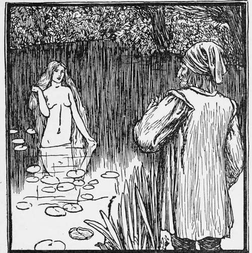
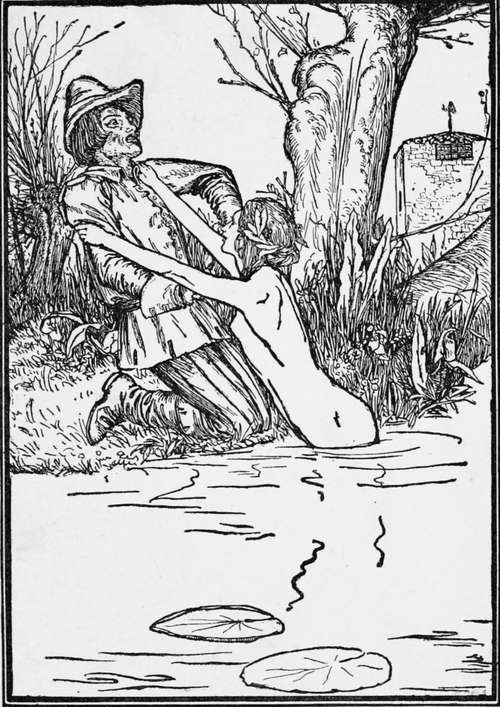

The Water Fairy
Description
This section is from the book "Household Tales by Brothers Grimm", by Brothers Grimm. Also available from Amazon: Household Tales by Brothers Grimm.
The Water Fairy
Once upon a time there was a miller and his wife, who together led a life of contentment and ease. They possessed both money and lands, and their prosperity steadily increased from year to year. But fortune is fickle, and misfortune comes upon us unawares; and even so it happened, that as their riches had increased, so gradually, year by year, they disappeared. This went on until the miller could scarcely call the mill he lived in his own. He was now full of trouble, and even after his day's work was done, he was unable to rest, for he tossed from side to side on his bed, his anxiety keeping him awake.
One morning he got up before daybreak, and went out; he thought the heaviness of his heart might perhaps be lightened in the open air. Just as he crossed the mill-dam, the first beam of the morning sun shot forth, and at the same moment he heard the sound of something disturbing the waters of the mill-pond. He turned, and saw the figure of a beautiful woman slowly rising above the surface. Her long hair, which she held back over her shoulders with her fair slender hands, fell around her like a bright garment. The miller knew that this must be the fairy of the water, and in his fear, was uncertain whether to go or stay. Then he heard her soft voice calling him by name, and asking him the reason of his sadness. At first he was struck dumb, but her kind tones revived his courage, and he then told her how he had formerly lived in happiness and luxury, but that now he was so poor that he did not know which way to turn.
"Be at peace," answered the fairy, "I will make you richer and happier than you were before, only you must in return promise to give me what has just been born in your house."
"That can be none other than a puppy or a kitten," thought the miller, and he gave his promise to her as she desired. The fairy then vanished beneath the waters, and he hurried joyfully back to his home, greatly comforted at heart. He was but a little way from the house, when a maid-servant ran out calling to him to rejoice, for a little son had been born to him. The miller stood still as if thunder-struck, for it flashed across him in an instant that the fairy had known of this, and had beguiled him.
With drooping head he went in to his wife, and when she asked, " Why do you show no sign of joy at the sight of your beautiful boy ?" he related to her what had happened and told her of the promise he had made the fairy. " And of what use or pleasure to me are good fortune and riches," he continued, " if I must lose my son! But what am I to do ?" And not one among the relations who had come in to wish them joy knew how to help or advise.
In the meantime prosperity returned to the miller's house. He was successful in all his undertakings and it seemed as if his chests and coffers filled of their own accord, and as if the money he put away multiplied itself during the night. In a little while his wealth was greater than it had been before, but he could not enjoy it in perfect peace, for the remembrance of the promise he had made to the fairy continually tormented him. He never went near the mill-pond without a dread at his heart that she would rise out of the water and remind him of what he owed her. He would not let the boy himself approach it: "Beware," he said to him, "if you but touch the water, a hand will come up out of it, seize you, and drag you down."
Year after year, however, passed, and the fairy never showed herself again, so that at last the miller's fears began to be allayed.
The boy grew towards manhood ; he was placed under a huntsman to be trained, and when he had himself become an accomplished huntsman, he was taken into the service of the Lord of the village.
There lived in the village a beautiful and true-hearted girl, with whom the young huntsman fell in love. When his master knew of this he made him a present of a little house, and the two were married, and lived happily and peacefully together.
One day the huntsman was chasing a roe. The animal turned from the wood into the open and he followed it and finally shot it. He did not notice that he was now in the neighbourhood of the dangerous mill-pond, and so, after touching the animal, he went to the water to wash the blood off his hands. He had scarcely dipped them in, when the fairy rose, flung her wet arms around him laughing, and dragged him down so quickly, that in a moment the waters had closed over him and all was again still.
When the evening came on and the huntsman did not return, his wife became alarmed. She went out to look for him, and as he had so often spoken to her of his fear of going near the mill-pond lest the fairy should by her wiles get possession of him, she suspected what had happened. She hastened to the waters, and her worst suspicions were confirmed when she saw her husband's hunting-pouch lying on the bank. Wailing and wringing her hands, she called her beloved one by name, but in vain; she ran to the further side of the pond, and again called him; she poured angry abuse on the fairy, but still no answer came. The surface of the pond remained unstirred by a single ripple, and only the reflection of the half moon looked calmly up at her from the water.
The poor wife would not leave the pond; she walked round and round it without rest or pause, sometimes in silence, sometimes uttering a loud cry of distress, sometimes crying softly to herself. But her strength failed her at last; she sank to the ground and fell into a deep sleep. Ere long a dream took possession of her.
The huntsman and the Fairy.
She was climbing painfully up between large masses of rock; her feet were caught by the thorns and briars, the rain beat in her face, and her long hair was blown about by the wind. When, however, she reached the summit, the whole scene changed. The sky was now blue, a soft air was blowing, and the ground sloped gently away to a pretty cottage, which stood in a green meadow, studded with many coloured flowers. She went up to it and opened the door, and there sat an old woman with white hair, who gave her a friendly nod. At this moment the poor wife awoke. Day had already dawned, and she resolved at once to follow the guidance of her dream. She climbed up the mountain with difficulty, and everything was exactly as she had seen it in the night. The old woman gave her a kindly welcome, and pointed to a chair, telling her to sit down. " Some great trouble must have befallen you," she said, " to bring you in search of my lonely cottage." The wife told her, amidst her tears, what had happened.
Continue to:
Tags
fairy tales, children's stories, brothers grimm, household tales